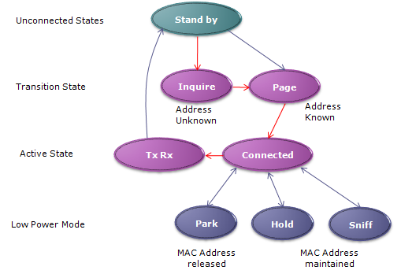
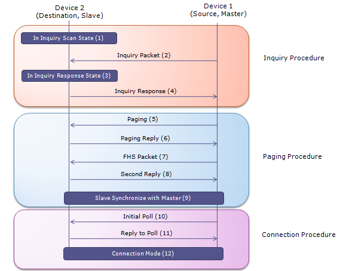

|
Bluetooth - Protocol Home : www.sharetechnote.com |
|
Overall state flow of bluetooth communication is as follows. When you see this kind of circular state diagram, you'd better select one of the starting point and end point. Otherwise, you will keep cycling through the states and your eye ball would be spinning endlessly -:). For example, I just picket "Stand by" as the first point and "Tx/Rx" as the end point and follow through the path marked in red arrows. As you turn on a bluetooth device, it would be into stand by mode and start "inquire". (This is like broadcasting a message to all direction saying "Is there any one listening to me ? If there is, let me know your address". Through this process, the device may get the response from multiple device. If it finds any device it want to connect, it sends Paging message to the device saying "I want to get connected to you". If it gets the acceptance from the other party, the both party gets into connected mode via a complicated steps which will be described next section.
Once in connected mode, both party can transmit and receive data. But what if there is no data to transmit or recieve for a long time ? It they stay awake during that period, it would waste a lot of battery power. To reduce the waste of the battery life, bluetooth support three levels of energy saving mode, called Sniff, Hold, Park.
In Sniff mode, the device still maintain the synchronization with piconet (network between bluetooth devices) but the Tx/Rx cycle gets reduced. This cycle is called "Sniff Interval" and this interval is programmable and depends on application.
In Hold mode, only the internal clock in the device is running. So in this mode, data transfer is not possible but if there is need for data transfer, it can switch to Active mode very quickly. This HOLD mode can be initiated ether Master or Slave.
In Park mode, the device still maintains the synchronization with piconet (network between bluetooth devices) but it does not transmit/recieve any data.. the device even release its MAC address. It just periodically wake up to listen to Master. If it gets any signal from Master requesting data transaction, it has to go through connection process again. It would take a little longer time/process to recover the connection but it saves energy the most.


|